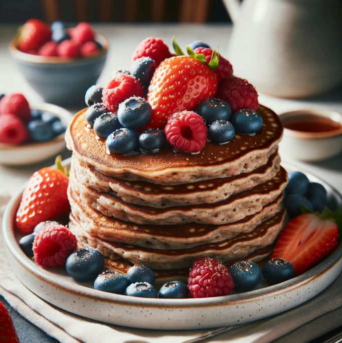

Whole Grain Pancakes with Fresh Berries
Ingredients
- Whole Grain Pancake Mix: Check the package instructions for the required amount.
- Water or Milk: As needed for preparing the pancake batter.
- Vanilla Extract or Cinnamon (Optional): For added flavor in the pancake batter.
- Cooking Spray or Oil: For greasing the griddle or pan.
- Fresh Berries: Choose a mix of strawberries, blueberries, raspberries, or your favorites.
- Maple Syrup or Honey (Optional): For drizzling over the pancakes.
- Powdered Sugar or Mint Leaves (Optional): For garnish.
| Nutrition Facts |
| Calories |
232 kcal |
| Protein |
5.86 g |
Meal Procedure
- Prepare Pancake Batter:
- In a mixing bowl, combine whole grain pancake mix with water or milk according to package instructions.
- Stir the mixture until you achieve a smooth and lump-free batter.
- Optionally, add a dash of vanilla extract or cinnamon for extra flavor.
- Heat the Griddle or Pan:
- Preheat a griddle or non-stick pan over medium heat.
- Lightly grease the surface with cooking spray or a small amount of oil.
- Cook Pancakes:
- Pour a ladleful of pancake batter onto the hot griddle, forming round pancakes.
- Cook until bubbles form on the surface of the pancake and the edges look set.
- Flip and Cook Other Side:
- Carefully flip each pancake using a spatula when the bottom is golden brown.
- Cook the other side until it achieves the same golden brown color.
- Serve with Fresh Berries:
- Arrange the cooked pancakes on a serving plate.
- Top the pancakes with a generous amount of fresh berries such as strawberries, blueberries, or raspberries.
- Drizzle with Syrup (Optional):
- If desired, drizzle the pancakes with maple syrup or honey for sweetness.
- Consider using a light drizzle to balance the natural sweetness of the fresh berries.
- Garnish (Optional):
- Optionally, garnish with a dusting of powdered sugar or a few mint leaves for a decorative touch.
- Serve Warm:
- Serve the whole grain pancakes with fresh berries immediately while they are warm.
Tips:
- Experiment with different types of berries or a combination for a variety of flavors and colors.
- Consider adding a dollop of Greek yogurt on top for a creamy texture and added protein.
- Adjust the sweetness by choosing a syrup or honey based on your preference.